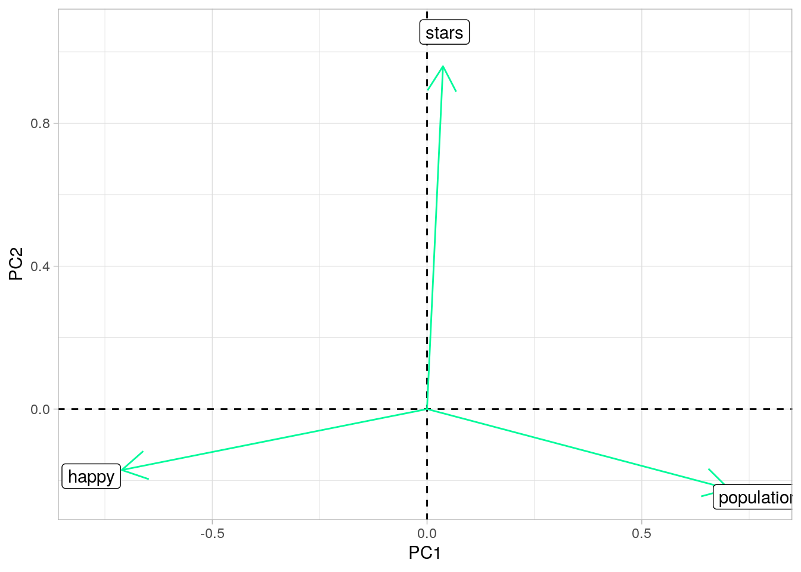

For this project I have selected a ramen rating and a world happiness dataset. The ramen ratings dataset is from "The Ramen Rater, includes 6 variables and was found here https://github.com/rfordatascience/tidytuesday/tree/master/data/2019/2019-06-04. The variables include the number of the review, the brand of the ramen, the variety of the ramen (flavoring, spice, etc.), the packaging style of the ramen, the ramen’s country of origin, and the star rating out of five. The world happiness dataset includes data from Gapminder, found here https://www.gapminder.org/data/. The world happiness dataset contains two variables, world happiness score and country. I limited the dataset to only include the happiness score for 2019, the same year from the ramen dataset, to make the data easier to manage. The actual happiness score is obtained from a country’s national average response to the Cantril life ladder question. The original score is scaled from 1 to ten, but it converted to a percentage for this dataset. I chose the ramen data first because it seemed interesting and fun to work with. From there I chose something that could easily join through the country variable, and the happiness data stood out to me. I don’t initially expect any correlation among the data, but maybe the countries with the highest rated ramen experience more life satisfaction.
library(tidyverse)
library(dplyr)
ramen_ratings <- readr::read_csv("https://raw.githubusercontent.com/rfordatascience/tidytuesday/master/data/2019/2019-06-04/ramen_ratings.csv")
head(ramen_ratings)## # A tibble: 6 x 6
## review_number brand variety style country stars
## <dbl> <chr> <chr> <chr> <chr> <dbl>
## 1 3180 Yum Yum Tem Tem Tom Yum Moo Deng Cup Thaila… 3.75
## 2 3179 Nagatanien tom Yum Kung Rice Vermicelli Pack Japan 2
## 3 3178 Acecook Kelp Broth Shio Ramen Cup Japan 2.5
## 4 3177 Maison de Coree Ramen Gout Coco Poulet Cup France 3.75
## 5 3176 Maruchan Gotsumori Shio Yakisoba Tray Japan 5
## 6 3175 Myojo Chukazanmai Tantanmen Cup Japan 3.5happyscore <- read_csv("hapiscore_whr.csv")
happyscore <- happyscore %>% select(1, 16)
happyscore <- happyscore %>% rename(happy = "2019")
head(happyscore)## # A tibble: 6 x 2
## country happy
## <chr> <dbl>
## 1 Afghanistan 0.257
## 2 Albania 0.488
## 3 Algeria 0.501
## 4 Angola NA
## 5 Argentina 0.597
## 6 Armenia 0.468In joining the data I used the inner join, dropping any rows in either dataset without a match. Because I was joining by the country variable, using inner join allowed me to avoid the majority of the NA values in ramen countries where a happiness score wasn’t available or where a country with a happiness score did not have any ramen represented. This mostly sacrificed countries with no ramen represented, which shouldn’t create many issues. The largest loss though, was losing a lot of Taiwan’s ramen scores, as they didn’t have an associated happiness score.
happy_ramen <- ramen_ratings %>% inner_join(happyscore, by = "country")The data was already tidy so I just displayed some unite and separate functions here. I first connected the brand and its variety by a “/” using“unite”. Next, I separated from that same “/” making the original two columns. Other tidying will be used throughout the rest of the project.
temp_happy <- happy_ramen %>% unite(brand, variety, col = "ramen",
sep = "/")
temp_happy %>% separate(ramen, into = c("brand", "variety"),
sep = "/")## # A tibble: 2,608 x 7
## review_number brand variety style country stars happy
## <dbl> <chr> <chr> <chr> <chr> <dbl> <dbl>
## 1 3180 Yum Yum Tem Tem Tom Yum Moo … Cup Thailand 3.75 0.6
## 2 3179 Nagatanien tom Yum Kung Rice Ve… Pack Japan 2 0.587
## 3 3178 Acecook Kelp Broth Shio Ramen Cup Japan 2.5 0.587
## 4 3177 Maison de C… Ramen Gout Coco Poul… Cup France 3.75 0.666
## 5 3176 Maruchan Gotsumori Shio Yakis… Tray Japan 5 0.587
## 6 3175 Myojo Chukazanmai Tantanmen Cup Japan 3.5 0.587
## 7 3173 Sapporo Ich… Momosan Ramen Tonkot… Pack United St… 5 0.694
## 8 3172 Samlip Hi-Myon Katsuo Udon Pack South Kor… 3.5 0.587
## 9 3170 Maison de C… Ramen Gout Carbonara Cup France 4 0.666
## 10 3169 Myojo Mapo Men Cup Japan 3.5 0.587
## # … with 2,598 more rowsUsing select, filter, and arrange, the first table shows all of the countries with a five star ramen rating, arranged by their happiness score. Canada is the country with the highest happiness score and 5 star ramen. The second table displays all of the ramen brand + variety combinations from the United States, arranged by their ramen rating. There are 45 ramen brands + variety combinations in the US that earned a 5 star rating. The third table lists countries by their happiness score, Finland has highest happiness score.
happy_ramen %>% select(country, happy, stars) %>% filter(stars ==
5) %>% arrange(desc(happy))## # A tibble: 410 x 3
## country happy stars
## <chr> <dbl> <dbl>
## 1 Canada 0.723 5
## 2 Canada 0.723 5
## 3 Australia 0.722 5
## 4 Australia 0.722 5
## 5 Australia 0.722 5
## 6 Australia 0.722 5
## 7 Germany 0.708 5
## 8 United States 0.694 5
## 9 United States 0.694 5
## 10 United States 0.694 5
## # … with 400 more rowshappy_ramen %>% group_by(brand) %>% filter(country == "United States") %>%
arrange(desc(stars)) %>% select(brand, variety, country,
stars)## # A tibble: 382 x 4
## # Groups: brand [62]
## brand variety country stars
## <chr> <chr> <chr> <dbl>
## 1 Sapporo Ichi… Momosan Ramen Tonkotsu United Sta… 5
## 2 Hakubaku Shoyu Soy Sauce Flavor Ramen United Sta… 5
## 3 Hakubaku Tonkotsu Pork Flavor Ramen United Sta… 5
## 4 Nongshim POP Pot Or Pan Chicken United Sta… 5
## 5 Jinya Ramen … Chicken Wonton Ramen United Sta… 5
## 6 Myojo Yakisoba Curry Flavor United Sta… 5
## 7 Vite Ramen Vegan Mushroom Shio United Sta… 5
## 8 Maruchan Ramen Noodle Soup Creamy Chicken Flavor (New… United Sta… 5
## 9 Nissin Cup Noodles Very Veggie Soy Sauce Flavor Ram… United Sta… 5
## 10 Nissin Cup Noodle Seafood Ramen Noodle Soup United Sta… 5
## # … with 372 more rowshappy_ramen %>% select(country, happy) %>% arrange(desc(happy))## # A tibble: 2,608 x 2
## country happy
## <chr> <dbl>
## 1 Finland 0.781
## 2 Finland 0.781
## 3 Finland 0.781
## 4 Netherlands 0.745
## 5 Netherlands 0.745
## 6 Netherlands 0.745
## 7 Netherlands 0.745
## 8 Netherlands 0.745
## 9 Netherlands 0.745
## 10 Netherlands 0.745
## # … with 2,598 more rowsThis first table shows the average ramen rating for all of that country’s ramen. The second table lists the average rating for each ramen brand and their varieties. The third table shows the summary statistics (mean, min, max, median, and sd) for the happiness variable. The highest happiness rating for the countries in this dataset is 0.781 and the lowest is 0.357. The median and the mean are fairly similar, suggesting a somewhat normal distribution. The next table include the number of distinct values for all of the characteristics. Next, is the fairly similar mean and median for the star rating. Last is code showing my addition of a new categorical variable. Using the median happy rating, I went one sd up and one sd down to categorize these values as “med”, most of the values are in this category. Values above this are labeled as high and values below are low.
happy_ramen %>% group_by(country) %>% summarise(mean(stars))## # A tibble: 35 x 2
## country `mean(stars)`
## <chr> <dbl>
## 1 Australia 3.26
## 2 Bangladesh 3.59
## 3 Brazil 4.04
## 4 Cambodia 4.2
## 5 Canada 2.26
## 6 China 3.47
## 7 Colombia 3.29
## 8 Estonia 3.5
## 9 Finland 3.58
## 10 France 4.19
## # … with 25 more rowshappy_ramen %>% group_by(brand) %>% summarise(mean(stars))## # A tibble: 381 x 2
## brand `mean(stars)`
## <chr> <dbl>
## 1 1 To 3 Noodles 4
## 2 7 Select 3.62
## 3 7 Select/Nissin 3.5
## 4 A-One 2.75
## 5 A1 3.08
## 6 ABC 4.21
## 7 Acecook 3.20
## 8 Adabi 3.81
## 9 Ah Lai 4.75
## 10 Ajinatori 3
## # … with 371 more rowshappy_ramen %>% summarise(mean(happy), min(happy), max(happy),
median(happy), sd(happy)) %>% pivot_longer(cols = c(1:5),
names_to = "stat", values_to = "value")## # A tibble: 5 x 2
## stat value
## <chr> <dbl>
## 1 mean(happy) 0.594
## 2 min(happy) 0.357
## 3 max(happy) 0.781
## 4 median(happy) 0.587
## 5 sd(happy) 0.0691happy_ramen %>% summarise_all(n_distinct) %>% pivot_longer(cols = c(1:7),
names_to = "variable", values_to = "n_distinct")## # A tibble: 7 x 2
## variable n_distinct
## <chr> <int>
## 1 review_number 2607
## 2 brand 381
## 3 variety 2427
## 4 style 9
## 5 country 35
## 6 stars 35
## 7 happy 32happy_ramen %>% summarise(median(stars, na.rm = T), mean(stars,
na.rm = T))## # A tibble: 1 x 2
## `median(stars, na.rm = T)` `mean(stars, na.rm = T)`
## <dbl> <dbl>
## 1 3.75 3.69happy_ramen <- happy_ramen %>% mutate(happy_cat = case_when(happy >
0.656 ~ "high", happy <= 0.656 & 0.518 <= happy ~ "med",
happy < 0.518 ~ "low"))This graph displays the average ramen rating per country. This histogram makes it much easier to compare the average ramen rating among the countries, compared to just looking at a table. From here we see that the average rating for each country lies around the overall average ramen rating score of 3.686. We can see the furthest outliers from the average here very clearly as well. The countries with the lowest average ratings of ramen (at or below 3/5 stars) include Canada, Netherlands, New Zealand, Nigeria, and Pakistan. The highest (at or above 4/5 stars) include Brazil, Cambodia, France, Indonesia, Malaysia, and Singapore.
happy_ramen %>% group_by(country) %>% summarize(`average ramen rating` = mean(stars,
na.rm = T)) %>% ggplot(aes(country, `average ramen rating`,
fill = country)) + geom_bar(stat = "identity") + theme(axis.text.x = element_text(angle = 45,
hjust = 1), legend.position = "none") + ggtitle("Average Ramen Rating per Country")This graph is displaying the relationship between the average rating of ramen in a country and their average response of happiness (life fulfillment on scale of 0 to 1). From this scatter plot we see that there in no relationship between the variables, therefore the quality of a country’s ramen and their happiness have no effect on each other. This is even further proven looking at the two countries with the highest and lowest happiness score. Their average ramen rating is very similar, just above and below a rating of 3.5/5 stars. The colors of the graph denote the happiness score category. Each country has it’s own sized dot. While this is hard to read, it was the easiest way to include the most variables I could think of!
happy_ramen %>% group_by(country) %>% ggplot(aes(happy, stars,
color = happy_cat, size = country)) + geom_point(stat = "summary",
fun = mean) + ggtitle("Country's Ramen Rating vs Happiness") +
theme_dark() + scale_x_continuous(breaks = seq(0, 0.8, 0.05))From this correlation heat map we see that the numeric variables are not very correlated with each other. The variables are of course perfectly correlated with themselves. The correlation between the star rating variable and the happiness variable are essentially zero. It was surprising to see higher correlation between the rating variable and the review number. The review number simply denotes the order in which the particular ramen was rated (from 1 to 3180) and I would not expect that to be higher than the other correlations, even by chance. I unfortunately really only had two comparable numeric variables at this point since the review number variable is really only a list variable. At this point to make the correlation heat map and the PCA work/include more information I added population data for each country from 2019, last minute. The data is also from Gapminder and these is still very little correlation among the variables with this data added
population <- read_csv("population_total.csv")
population <- population %>% select(country, "2019")
population <- population %>% rename(population = "2019")
happy_ramen <- happy_ramen %>% inner_join(population, by = "country")
corhap <- happy_ramen %>% select_if(is.numeric) %>% cor(use = "pair")
tidycor <- corhap %>% as.data.frame %>% rownames_to_column("var1") %>%
pivot_longer(-1, names_to = "var2", values_to = "correlation")
tidycor %>% ggplot(aes(var1, var2, fill = correlation)) + geom_tile() +
scale_fill_gradient2(low = "white", mid = "plum2", high = "slateblue1") +
geom_text(aes(label = round(correlation, 2)), color = "black",
size = 4) + theme(axis.text.x = element_text(angle = 90,
hjust = 1)) + coord_fixed()Here we are beginning the PCA in order to understand the structure of this dataset using the numeric variables. In these step the data is being cleaned by first selecting the numeric variables desired. Next it is normalized and scaled. The plot created gives and idea of the PCs and aids in determining the PCs to be used next.
happy_ramen1 <- happy_ramen %>% select(-1) %>% na.omit()
happy_nums <- happy_ramen1 %>% select_if(is.numeric) %>% scale
rownames(happy_nums) <- happy_ramen1$Name
happy_pca <- princomp(happy_nums)
names(happy_pca)## [1] "sdev" "loadings" "center" "scale" "n.obs" "scores" "call"eigval <- happy_pca$sdev^2
varprop = round(eigval/sum(eigval), 2)
ggplot() + geom_bar(aes(y = varprop, x = 1:3), stat = "identity") +
xlab("") + geom_path(aes(y = varprop, x = 1:3)) + geom_text(aes(x = 1:3,
y = varprop, label = round(varprop, 2)), vjust = 1, col = "magenta",
size = 5) + scale_y_continuous(breaks = seq(0, 0.6, 0.2),
labels = scales::percent) + scale_x_continuous(breaks = 1:10) +
theme_light()In keeping PCs with eigenvalues are greater than 1, I kept PC1 and PC2. PC1 and PC2 also have cumulative proportion variance <= 80% (PC2 is very close). The summary of the PCs is below. PC1 is showing a relationship between population and happiness and is uncorrelated with ramen rating. High scores on PC1 mean a high population and low happiness. Low scores mean a lower population and higher happiness. Similarly with PC2, a high score means lower population and happiness but a higher ramen rating (largest magnitude). A low PC2 score would indicate a higher happiness and population with a lower ramen rating.
round(cumsum(eigval)/sum(eigval), 2)## Comp.1 Comp.2 Comp.3
## 0.47 0.81 1.00eigval## Comp.1 Comp.2 Comp.3
## 1.4028550 1.0361097 0.5598783summary(happy_pca, loadings = T)## Importance of components:
## Comp.1 Comp.2 Comp.3
## Standard deviation 1.1844218 1.0178947 0.7482502
## Proportion of Variance 0.4677987 0.3455031 0.1866981
## Cumulative Proportion 0.4677987 0.8133019 1.0000000
##
## Loadings:
## Comp.1 Comp.2 Comp.3
## stars 0.960 0.279
## happy -0.711 -0.171 0.682
## population 0.702 -0.223 0.676Here we see from the plotting, that the conclusions from the summary of PC1 and PC2 are true. Especially in the second and third plot we see these opposing relationships.
happydf <- data.frame(PC1 = happy_pca$scores[, 1], PC2 = happy_pca$scores[,
2])
ggplot(happydf, aes(PC1, PC2)) + geom_point(col = "lightskyblue") +
theme_light()happy_pca$loadings[1:3, 1:2] %>% as.data.frame %>% rownames_to_column %>%
ggplot() + geom_hline(aes(yintercept = 0), lty = 2) + geom_vline(aes(xintercept = 0),
lty = 2) + ylab("PC2") + xlab("PC1") + geom_segment(aes(x = 0,
y = 0, xend = Comp.1, yend = Comp.2), arrow = arrow(), col = "mediumspringgreen") +
geom_label(aes(x = Comp.1 * 1.1, y = Comp.2 * 1.1, label = rowname)) +
theme_light()
library(factoextra)
fviz_pca_biplot(happy_pca)Knowing what a high or low score means for PC1 and PC2, the code below give the identification of the country scoring highest and lowest for both PCs. In confirming with my other plots/data, the conclusions from the PCs do hold up here. For example, India scoring high in PC1 should mean that is has a high population and a low happiness. Both of these are true relative to the rest of the data in the dataset. China as the lowest PC2 score should have a higher happiness and population and a lower ramen rating. China has the highest population, an above average happiness score and a lower than average ramen rating. Overall, the PCA allowed a different understanding of the structure on this data.
country <- happy_ramen1$country
happy_pca$scores %>% as.data.frame %>% cbind(country, .) %>%
top_n(3, Comp.1) #highest PC1## country Comp.1 Comp.2 Comp.3
## 1 India 4.481932 1.1847951 -0.05128763
## 2 India 4.463689 0.7138353 -0.18808477
## 3 India 4.463689 0.7138353 -0.18808477
## 4 India 4.481932 1.1847951 -0.05128763happy_pca$scores %>% as.data.frame %>% cbind(country, .) %>%
top_n(3, wt = desc(Comp.1)) #lowest PC1## country Comp.1 Comp.2 Comp.3
## 1 Finland -2.381951 -0.4989389 1.378858
## 2 Finland -2.372830 -0.2634590 1.447256
## 3 Finland -2.381951 -0.4989389 1.378858happy_pca$scores %>% as.data.frame %>% cbind(country, .) %>%
top_n(3, wt = Comp.2) #highest PC2## country Comp.1 Comp.2 Comp.3
## 1 Myanmar 1.363167 1.751685 -1.587045
## 2 Myanmar 1.363167 1.751685 -1.587045
## 3 Myanmar 1.363167 1.751685 -1.587045
## 4 Myanmar 1.363167 1.751685 -1.587045happy_pca$scores %>% as.data.frame %>% cbind(country, .) %>%
top_n(3, wt = desc(Comp.2)) #lowest PC2## country Comp.1 Comp.2 Comp.3
## 1 China 2.811086 -3.942222 0.2163089
## 2 China 2.811086 -3.942222 0.2163089
## 3 China 2.811086 -3.942222 0.2163089
## 4 China 2.811086 -3.942222 0.2163089
## 5 China 2.811086 -3.942222 0.2163089
## 6 China 2.811086 -3.942222 0.2163089